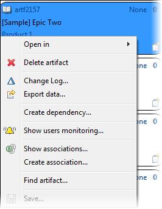
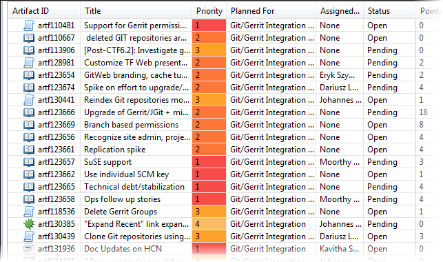
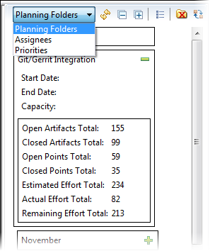

In the planning board, you can assign artifacts to planning folders or rank them
using drag and drop, make quick changes and in-place updates, and view charts that help you
monitor progress.
The planning board provides three views:
The top area lets you control what you see in the planning board.
- Planning folder:
- Depending on your active planning folder, you can see the list of
artifacts for the product (the "product backlog"), or a particular
release or iteration (in Agile terms, an "iteration backlog" or "sprint
backlog"). Select "Unscheduled""None" to display all the artifacts required for
the product that have not yet been assigned to a specific iteration or
release.
When you open the planning board, the planning folder is set
to the one you last worked with. Typically, this is the current
sprint. When your change your active planning folder, the planning
board will change to reflect your selection.
- Show only:
- Select an existing tracker query or add a new one to identify the
artifacts you want displayed in the card area.
- Highlight:
- Select an existing tracker query or add a new one to highlight specific
cards. For example, if you have all open artifacts displayed, you might
want to highlight only the ones with the priority P1.
- Rank:
- Select Rank from the Sort by dropdown list to see
artifact cards displayed in ranked sequence. Alternatively, you can click the Rank mode
icon in the upper right corner of the planning board. To change
the order in which artifacts are addressed, drag and drop the cards to
change their
ranks.
- Cards:
- Select this option from the planning board view dropdown list to see the
artifacts displayed as cards. In version 4.0 of the Desktop, this view
combines the functionality of the Summaries view available earlier. To
control the information displayed on the artifact cards, toggle the
Show card details option in the upper right
corner of the planning board. You can choose to display just the fields
focused on the Agile process: title, description, assigned user, story
size and the planning folder the artifact belongs to. Or you can choose
to display all the configured artifact fields.
Note: Only the fields selected by the project administrator while
configuring the planning board are displayed.
To create a new
artifact, click the New Artifact icon on the
artifact card and fill in its attributes in the New
Artifact dialog. The new artifact is assigned to the
parent artifact's planning folder, not necessarily the folder currently
selected.Tip: With GitEye 1.3, artifact cards have several context menu options for
actions you would perform in the CollabNet
Sites view — for example, you can create
associations and dependencies, export artifact data, and more.

- List:
- Select this option from the planning board view dropdown list to have
the artifacts listed in a table instead of cards. You might find this
useful when you want to make quick inline edits to artifacts, for
example, when you're in a planning meeting and need to make changes on
the fly.

Tip: While the Sort By and
Descending options are available for
sorting artifacts in all planning board views, clicking a column
header in the List view provides the same functionality.
Note: Inline edits are not saved to the server until you save your
planning board changes.
- Columns:
- Select this option from the planning board view dropdown list when you
want a view similar to the Board View in the TeamForge web
interface. This view is available with version 4.0 of the
Desktop. You start populating the columns by selecting a planning folder
for each. For example, you may want to select the product backlog in the
leftmost column and various teams working on the release in the other
two columns, or a different sprint in each column.
- To rank a card within a planing folder, drag and drop it within
that column.
- To reassign a card from one planning folder to another, move it
across the columns.
Note: When you drop the card, its rank is
relative to its position in the new planning folder. If you
move a child artifact to a planning folder where its parent
is already present, the child artifact is filed under its
parent and its rank is relative to the parent's
position.
- Show planning folders:
- This option is selected by default and puts the planning board in
planning mode.
The bulk of the planning board is taken up by the card area.
When you select Planning Folders from the dropdown
list, the planning folder area displays a hierarchy of all the planning folders in
your project. There are several features to help you organize and work with planning
folders:

-
Expand planning folders to see field details.
-
Double-click a planning folder to update its fields.
-
Display planning folders as a list.
-
Show or hide inactive planning folders.
-
Reorganize the
sub-folders within a planning folder.
-
Create a new planning
folder.
The chart icons at the top right corner of the planning board provide access to a
variety of graphs that help you monitor your project's progress. See
What are all these charts about? for more information.